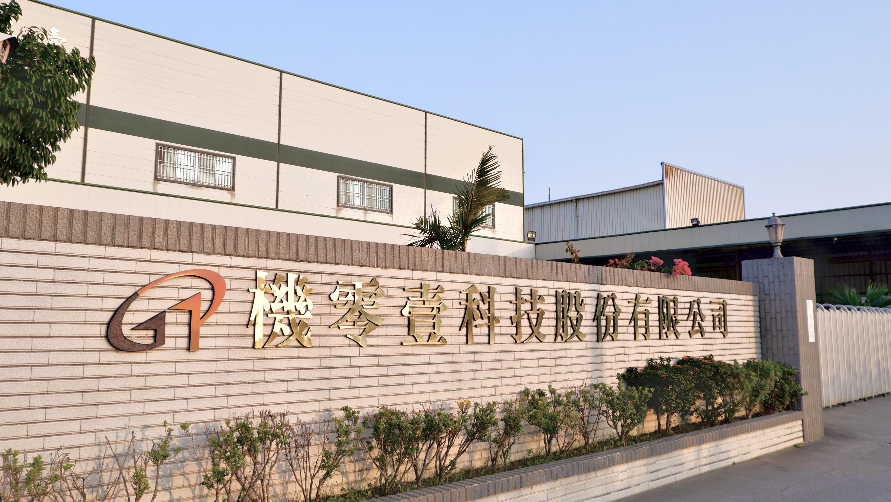

關於機零壹科技
傳承三十年精密工藝，追求極致品質
公司簡介
傳承三十載，精密塑膠加工的專家
機零壹科技股份有限公司 (G01 Technologies Inc.) 成立於 1991 年，座落於台南市安定區。三十多年來，我們專注於精密塑膠加工與光學級導光板的研發與生產。
從草創初期的傳統模具加工，到今日引進全自動 CNC 智慧生產線，機零壹始終站在產業轉型的前線。我們深信，唯有精確的數據與細膩的工法，才能成就卓越的產品。

核心價值與經營理念
引領機零壹前進的三大支柱
品質至上
品質是企業的靈魂。我們對每一塊板材、每一道刀痕都有近乎苛求的品質標準，確保交付給客戶的產品皆為精品。
技術領先
不斷更新自動化設備與加工技術，結合電腦輔助設計 (CAD/CAM)，挑戰更高難度的精密製程需求。
誠信服務
我們視客戶為長期的戰略夥伴。堅持誠信經營，提供透明、專業且具競爭力的解決方案，共創雙贏。
發展里程碑
每一步成長，都凝聚了機零壹全體員工的汗水與智慧
-
1991 - 創立初期
公司於台南正式成立，引進首台精密銑床，開啟零件加工業務。
-
2005 - 技術轉型
跨足光學級 PMMA 加工領域，開始為國內電視顯示器大廠提供導光板加工服務。
-
2018 - 智慧生產
全面升級自動化 CNC 中心，並導入 ISO 9001 品質管理體系。
-
未來 - 全球視野
致力於高階光學零組件的多元化應用，拓展醫療、汽車與穿戴裝置市場。
